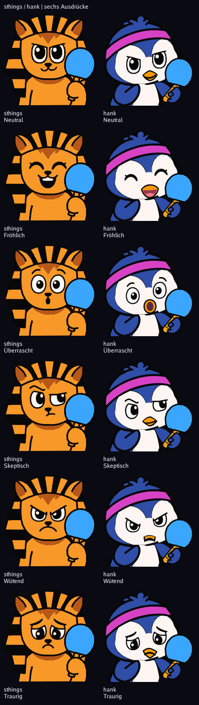
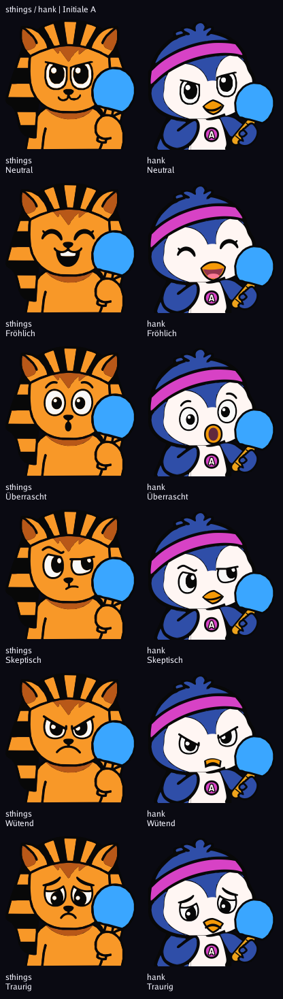
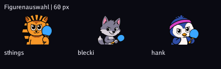

Aktueller Stand: gerader Schläger und Griff von vorn
110 % Rahmung. Vollständiger sthings-Schlägerpfad bei 91 % Größe; Hand und Griff vollständig sichtbar. Alle sechs Gesichter bleiben abgesehen von der Rahmung unverändert.
| Messwert | sthings | hank |
|---|---|---|
| Fläche, 420er Rendering | 130 × 135 px | 118 × 123 px |
| Mittelpunkt unter Augenlinie | 47,0 | 47,56 |
| Rekonstruierte Gesichtsüberdeckung | 22,35 % | 20,27 % |
| Griff sichtbar, Fläche | 503 | 862 |
Überdeckung bei sthings aus einer symmetrisch ergänzten Gesichtshälfte rekonstruiert: Der Originalpfad ist bereits um den Schläger ausgespart. Methode und vollständiger Bericht.


Emblem 48 × 48; rund 29 Einheiten zum Schnabel und 25 zum unteren Rand. Es sitzt frei auf der Brust.

Echte Figurenauswahl im Browser
192 Navy · 192 Schwarz · 64 Navy · 64 Schwarz · 28 Navy · 28 Schwarz
Unterscheidbarkeit 64 px: 193, schwächstes Paar Skeptisch/Wütend. Echte LED-Abnahme offen.